Bluebird Blue
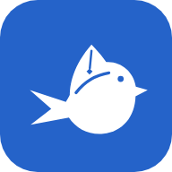
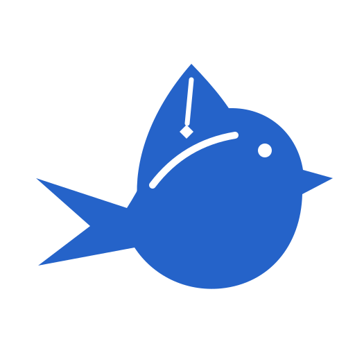
WYWO — light tab
WYWO — dark tab
assets/icons/bluebird/ · favicon.svg · favicon-16/32.png · apple-touch-icon.png · icon-192/512.png · app-icon.svg · mark.svg
One bluebird mark, eight Bluebird UI themes. Generated by node tools/build-icons.js from assets/logo/.


assets/icons/bluebird/ · favicon.svg · favicon-16/32.png · apple-touch-icon.png · icon-192/512.png · app-icon.svg · mark.svg
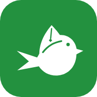
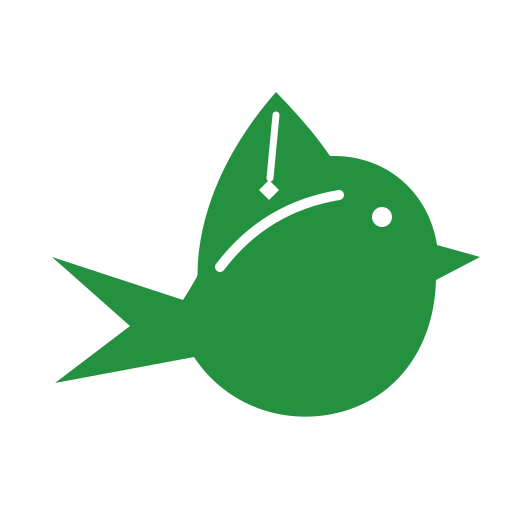
assets/icons/parakeet/ · favicon.svg · favicon-16/32.png · apple-touch-icon.png · icon-192/512.png · app-icon.svg · mark.svg
assets/icons/cardinal/ · favicon.svg · favicon-16/32.png · apple-touch-icon.png · icon-192/512.png · app-icon.svg · mark.svg
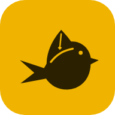
assets/icons/goldfinch/ · favicon.svg · favicon-16/32.png · apple-touch-icon.png · icon-192/512.png · app-icon.svg · mark.svg
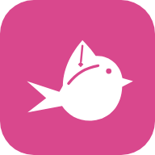
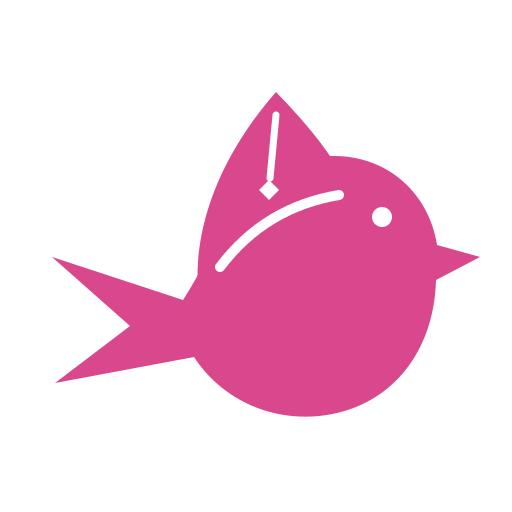
assets/icons/spoonbill/ · favicon.svg · favicon-16/32.png · apple-touch-icon.png · icon-192/512.png · app-icon.svg · mark.svg
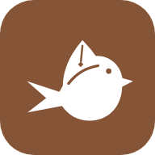
assets/icons/sparrow/ · favicon.svg · favicon-16/32.png · apple-touch-icon.png · icon-192/512.png · app-icon.svg · mark.svg
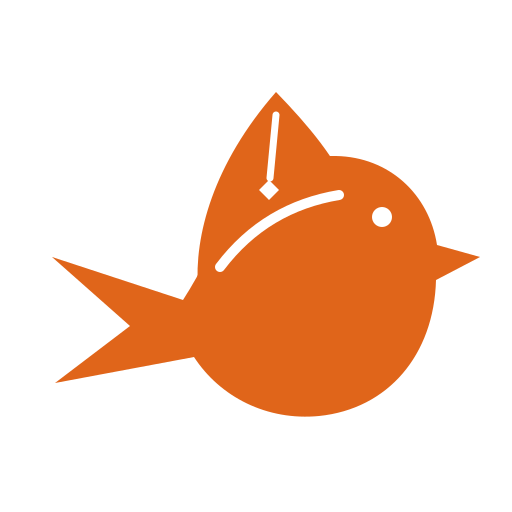
assets/icons/robin/ · favicon.svg · favicon-16/32.png · apple-touch-icon.png · icon-192/512.png · app-icon.svg · mark.svg
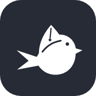
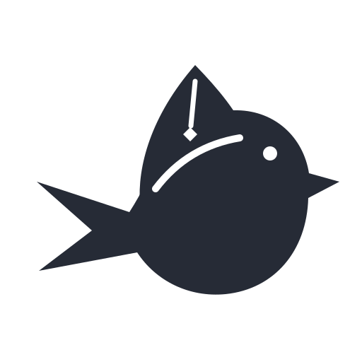
assets/icons/heron/ · favicon.svg · favicon-16/32.png · apple-touch-icon.png · icon-192/512.png · app-icon.svg · mark.svg